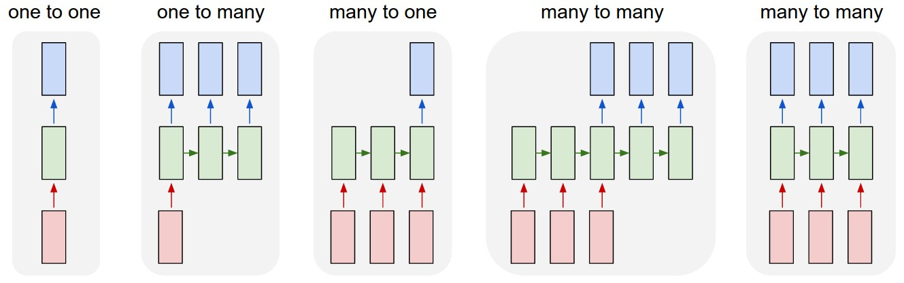
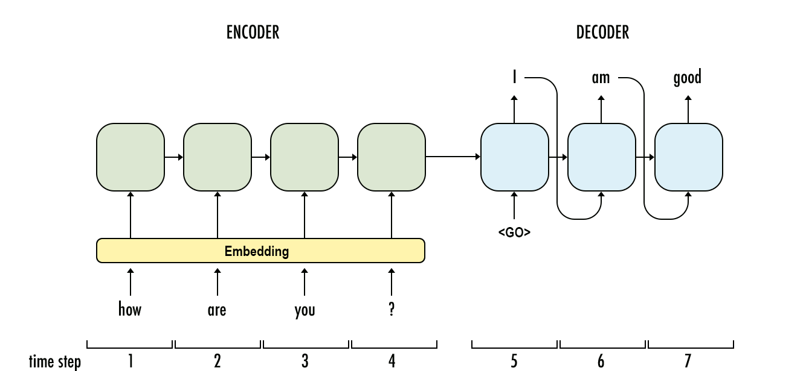
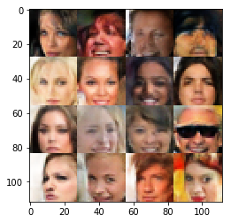
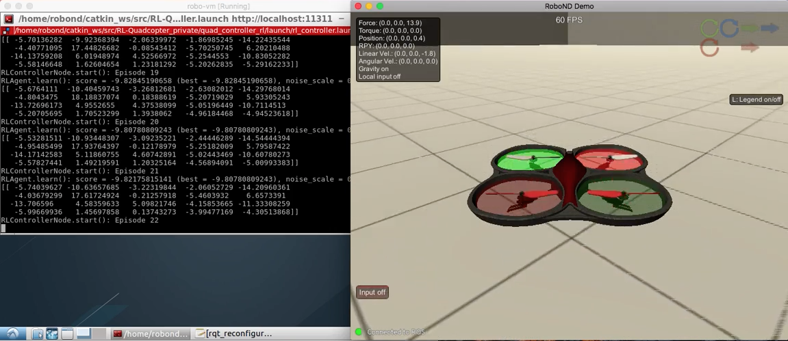

The Deep Learning Nanodegree program is divided into five parts, giving you a thorough understanding of deep learning, and covering some of the major topics. Please read more in our Student Handbook.
The first part is an introduction to the program as well as a couple lessons covering tools you'll be using. You'll also get a chance to apply some deep learning models to do cool things like transferring the style of artwork to another image.
We’ll start off with a simple introduction to linear regression and machine learning. This will give you the vocabulary you need to understand recent advancements, and make clear where deep learning fits into the broader picture of Machine Learning techniques.
In this part, you'll learn how to build a simple neural network from scratch using python. We'll cover the algorithms used to train networks such as gradient descent and backpropagation.
The first project is also available this week. In this project, you'll predict bike ridership using a simple neural network.

You'll also learn about model evaluation and validation, an important technique for training and assessing neural networks. We also have guest instructor Andrew Trask, author of Grokking Deep Learning, developing a neural network for processing text and predicting sentiment.
Convolutional networks have achieved state of the art results in computer vision. These types of networks can detect and identify objects in images. You'll learn how to build convolutional networks in TensorFlow.
You'll also get the second project, where you'll build a convolutional network to classify dog breeds in pictures.

You'll also use convolutional networks to build an autoencoder, a network architecture used for image compression and denoising. Then, you'll use a pretrained neural network (VGGnet), to classify images of flowers the network has never seen before, a technique known as transfer learning.
In this part, you’ll learn about Recurrent Neural Networks (RNNs) — a type of network architecture particularly well suited to data that forms sequences like text, music, and time series data. You'll build a recurrent neural network that can generate new text character by character.
Then, you'll learn about word embeddings and implement the Word2Vec model, a network that can learn about semantic relationships between words. These are used to increase the efficiency of networks when you're processing text.

You'll combine embeddings and an RNN to predict the sentiment of movie reviews, an example of common tasks in natural language processing.
In the third project, you'll use what you've learned here to generate new TV scripts from episodes of The Simpson's.
Generative adversarial networks (GANs) are one of the newest and most exciting deep learning architectures, showing incredible capacity for understanding real-world data. The networks can be used for generating images such as the CycleGAN project.

The inventor of GANs, Ian Goodfellow, will show you how GANs work and how to implement them. You'll also learn about semi-supervised learning, a technique for training classifiers with data mostly missing labels.
In the fourth project, you'll use a deep convolutional GAN to generate completely new images of human faces.
Deep reinforcement learning has been in the center of some of the most recent advances in artificial intelligence. For example, it was widely used in the construction of AlphaGo by DeepMind.
In this section you'll use deep neural networks to design agents that can learn to take actions in a simulated environment. You'll then apply it to complex control tasks like video games and robotics.
In the fifth project, you will design a Deep Reinforcement Learning agent to control several quadcopter flying tasks, including take-off, hover, and landing.